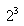
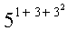
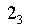
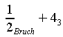
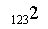
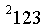
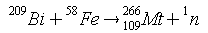
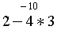
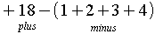
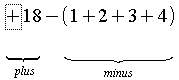

| [zurück] | [Hauptmenü] | [weiter] |
OpenOffice.org Formel
03 - besonderes Positionieren
Natürlich will man viel mehr als nur Brüche schreiben
können! Als nächstes zeige ich Ihnen, wie man Zeichen
hoch und tief stellen kann:
hier das Hochstellen:
| Kommando-Eingabefeld | Formel |
|---|---|
2^3 |

|
5^{1+3+3^2} |

|
und hier das Tiefstellen:
2_3 |

|
{1 over 2}_Bruch + 4_3 |

|
Außer diesem gibt es noch das davorgesetzte Hoch- und Tiefstellen; das wird z.B. in der Chemie benötigt. Hier ein paar Beispiele:
2 lsub{123} |

|
123 lsup{2} |

|
Bi lsup{209} + Fe lsup{58} toward Mt
lsup{266}lsub {109} + n lsup{1} |

|
Bei dem letzten Beispiel wurde z.B. der 'toward' Befehl verwendet,
der einen Pfeil erzeugt. Auch möchte ich darauf hinweisen,
dass bei 'Mt' vorgestelltes Hoch- und Tiefstellen einfach durch
Hintereinanderschreiben kombiniert wird!
Als dritte Art gibt es das Darüber- und
Darunterschreiben:
{2-4*3} csup{-10} |

|
+18
csub{plus}-(1+2+3+4)csub{minus} |

|
Als kleine Anmerkung möchte ich noch hinzufügen, dass
man das letzte Beispiel noch eleganter lösen könnte:
+ 18 underbrace plus - (1+2+3+4)
underbrace minus |

|
| [zurück] | [Hauptmenü] | [weiter] |
© Copyright 2003, Harald Schilly
This documentation is part of "Erste Schritte: OpenOffice.org Textdokument", which is released
under the terms of the PDL.
For full copyright and license info read the index page.